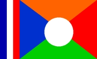
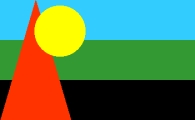
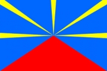

Le fait du mois sur l'Internet Réunionnais c'est une page perso d'une famille de zoreils en voyage autour du monde et de passage dans le DOM de l'océan Indien. Ses
mésaventures étalées sur le web, ses explications pleines de ponsifs et ses jugements obtus n'ont pas été du goût de tous. Les forums réunionnais ont crépité et le livre d'or que free offrait à ses pages perso voit passer des noms d'oiseaux.
Quelques phrases injurieuses ont même valu à cette page perso d'être citée
dans le quotidien de la Réunion qui sans-doute découvrait là le flamewar qu'ont voit parfois sur Internet.
Excès de fierté patriotique ou juste réaction ? Vous ne pourrez pas en juger puisque le site a depuis été
retouché pour être plus crémeux.

Parlons donc de ce patriotisme réunionnais. En France, de nombreuses
régions affirment leur patriotisme régional avec un drapeau (Basque,
Breton, Corse...) Qu'en est il de la Réunion ?
Sur le site portail de domtomfr.com on voit un
drapeau planté sur l'île. Ce drapeau créé par l'Association pour le Drapeau de la Réunion en 1996 a pour but de battre au vent aux coté des drapeaux français (tricolore) et européen. Le drapeau français au canton et sur tout le coté gauche rappelle l'attachement à la France. Les couleurs représentent les differentes origines de la population de l'île. Le bleu pour l'Europe, le orange pour l'Inde, le rouge pour la Chine et le vert pour l'Afrique. Le rond blanc au centre symbolise la paix et l'harmonie dans laquelle vivent ces populations.

Mais sur le site trilingue
(français, anglais et créole réunionnais) de Franswa Sintomer (aujourd'hui disparu), le drapeau culturel de la Réunion est
différent et il est accompagné d'explications pour les des couleurs mais pas des formes. On y voit quand même un beau soleil et un triangle rouge représentant le piton de la Fournaise. Franswa Sintomer a repris ce drapeau au dos d'un disque de maloya qu'il a produit.
Aucun de ces drapeaux n'est fabriqué ni repris par des
organismes officiels comme le conseil général ou le conseil
régional. Officiellement, le drapeau de la réunion est le drapeau tricolore, comme indiqué sur le site
vexillologique flags.net (qui a depuis adopté le premier drapeau).
Sur son site atlasgeo.net, Pascal Gross a compris que cela ne sert à rien de mourir pour un drapeau et présentait les deux sur son site des drapeaux du monde.

Un nouveau drapeau réunionnais a vu le jour en ligne le 28 avril 2003 en résultat d'un concours organisé par l'association réunionnaise de vexillologie (
association pour un emblème et une devise pour la Réunion ).
Une belle initiative qui n'a toujours rien d'officiel. Le drapeau a été dessiné par Guy Pignolet, un ingénieur de Sainte-Rose qui lance parfois des satellites. Plus tard, on a donné le nom de Lö Mahavéli au drapeau, un terme créole inspiré de Mahavel qui veut dire «Beau Pays» en malgache et Veli qui est le nom donné à l'étoile du matin par les malbars (tamouls de la Réunion).
Le créateur du Lö Mahavéli l'a même accompagné d'une belle description bilingue, français et créole :
Ce drapeau n'est pas tout récent. En fait, Guy Pignolet a dessiné ce drapeau en 1975 au moment ou il s'est rendu compte que ce symbole manquait à sa région. Il est réelement devenu connu au moment ou le chercheur l'a proposé avec succès à l'association de vexillologie. Depuis 2003, l'association de vexillologie tente de promouvoir ce drapeau sur internet et ce dernier est de plus en plus repris pour représenter la Réunion. Le site des drapeaux du monde de Pascal Gross ne montrait plus que celui-ci avant de fermer.
Le drapeau commence à être produit et a être agité dans les fêtes. En 2014, l'association remet une couche et propose aux candidats pour les élections municipales de s'engager à faire floter ce drapeau sur le fronton des mairies. Une page du site Réunionnais du monde recense le succès du Mavéli jusqu'à la pièce frappée par la monnaie de Paris en 2010.